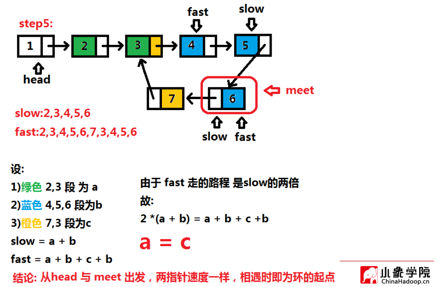

方法一：使用用C++的set库
遍历链表逐一装入set集合，当出现一个结点已经收录在set中时，便找到了该节点
1
2
3
4
5
6
7
8
9
10
11
12
13
14
15
16
17
18
19
20
21
22
23
24
25
26
27
28
29
30
31
32
33
34
35
36
37
38
39
40
41
42
43
|
class Solution {
public:
ListNode* detectCycle(ListNode* head) {
set<ListNode*> node_set;
while (head)
{
if (node_set.find(head) != node_set.end())
return head;
node_set.insert(head);
head = head->next;
}
return NULL;
}
};
int main() {
ListNode a(1);
ListNode b(2);
ListNode c(3);
ListNode d(4);
ListNode e(5);
ListNode f(6);
ListNode g(7);
a.next = &b;
b.next = &c;
c.next = &d;
d.next = &e;
e.next = &f;
f.next = &g;
g.next = &c;
Solution solve;
ListNode* p = solve.detectCycle(&a);
if (p)
cout << "链表有环，环的第一个结点为：" << p->val << endl;
else
cout << "链表无环" << endl;
return 0;
}
|
结果：
方法二：快慢指针
初始化两个指针指向头结点，第一个指针速度是1，第二个指针速度是2，即第一个指针每次遍历一个结点，第二个指针每次遍历两个结点，当他们相遇时，便说明了该链表存在环（女少口阿）
而这种办法初步看只能求出是否有环，但求不出具体环的初始位置结点，故需要进一步分析：

————图片来自小象学院教程课件
重点是这句话：从head和meet（即相遇的点）出发，相遇即为环的起点（女少口阿*2）
代码：
1
2
3
4
5
6
7
8
9
10
11
12
13
14
15
16
17
18
19
20
21
22
23
24
25
26
27
28
29
30
31
32
|
class Solution {
public:
ListNode* detectCycle(ListNode* head) {
ListNode* fast = head;
ListNode* slow = head;
ListNode* meet = NULL;
while (fast)
{
slow = slow->next;
fast = fast->next;
if (!fast)
return NULL;
fast = fast->next;
if (fast == slow) {
meet = fast;
break;
}
}
if (meet == NULL)
return NULL;
while (head&&meet)
{
if (head == meet)
return head;
head = head->next;
meet = meet->next;
}
return NULL;
}
};
|
就执行用时和内存消耗来看，用set都是比较不友好的，用普通算法就贼省时省内存 |*￣ー￣|
ps: 小象学院教程 https://www.bilibili.com/video/BV1GW411Q77S?t=7029&p=2 的笔记
LeetCode题号： 142